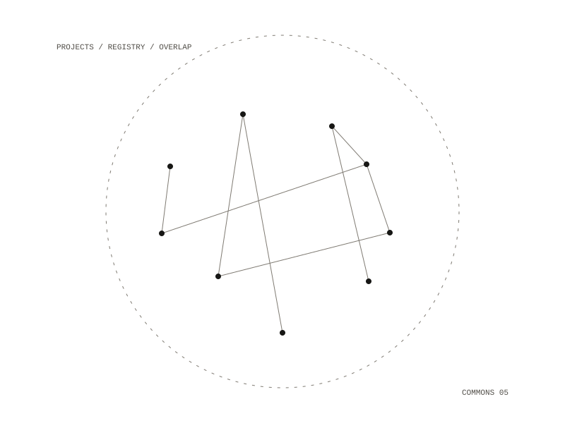

mcp.cyborg.support
A federated project-discovery network. A local tool server profiles your projects (what they do, how mature they are, how reusable they are) and a registry, designed to be hosted, lets someone else ask whether anyone is already building this. The case it exists for is a project that is 70% built and has not been touched in 14 months.

Two servers
The two servers have opposite trust models. The local one runs on your machine, sees source and git history, and has no network. The registry is designed to be hosted; it is invite-only, sees only facets and hashes and never source, and its whole job is the network. Members hold their own keys and sign their profiles, and each can be revoked separately. A folder of documents with no git in it is profiled too, as an archive.
Rules it keeps
- On the Docker install, the scanner has files and no network; the publisher has network and no files.
- Nothing leaves the machine without explicit consent for each project.
- Source code never reaches the registry.
- Secrets are scrubbed at the scanner, and scrubbing fails closed.
- Overlap is reported per dimension with evidence, never as one blended score.
- Identity is brokered, never disclosed.
Scoring
An overlap report names the dimensions that match and those that differ, such as purpose, stack, data model and audience, each with a score and the evidence for it. Maturity is a rubric of stages from idea to maintained, because commit recency alone cannot tell a finished small tool from a half-built one. Graded against a checked-in set of labelled repositories, the rubric matches 32 of 35. Reusability is scored from local signals such as hardcoded paths and whether there is a licence, and only the kind of path found is recorded, never the path itself.
Running it
Docker, Make and git are the only host requirements. The scanner reads its input in a hardened container with a read-only root and read-only scan folders; it opens no binary formats, and PDFs and images are counted, never read.
a local profiler on your machine, and an invite-only registry designed to be hosted
git repositories and folders of documents